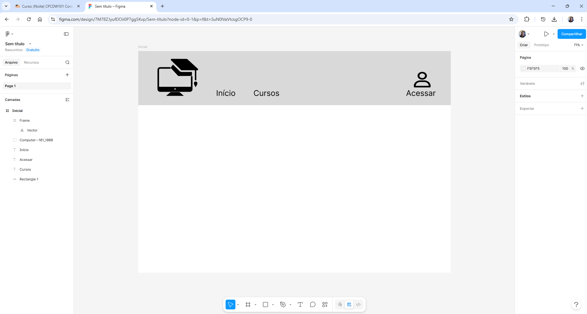

Tema:Um site educacional que apresenta os principais conceitos e elementos do HTML e da linguagem C de forma simples e organizada. O conteúdo é explicado com exemplos práticos e acessíveis, permitindo que iniciantes aprendam tanto a construir páginas web quanto a desenvolver programas básicos em C.
Público-alvo:O projeto é voltado para estudantes iniciantes em programação e desenvolvimento web, pessoas curiosas sobre como funcionam páginas da internet e programas de computador, além de quem busca material de apoio para estudo e prática em HTML e C.
Funcionalidades: Na página inicial, o visitante encontra uma introdução ao HTML e à linguagem C, com destaque para sua importância no aprendizado de programação e desenvolvimento. Uma menu de cursos, onde ele irá listar os cursos disponiveis (neste caso somente linguagem C e HTML). Outras Funcionalidades inda estou pensando
Estou realizando a prototipação de tela, pois estou aproveitando a disciplina de desing de interface, onde tenho um trabalho de prototipação para entregar, então resolvi juntar os dois trabalhos para colocar em prática os conhecimentos obtidos em ambas as disciplinas.
